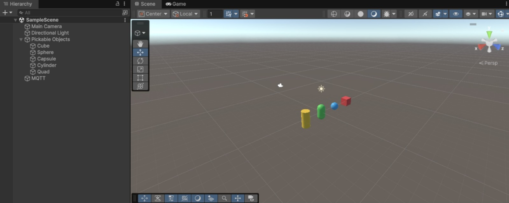
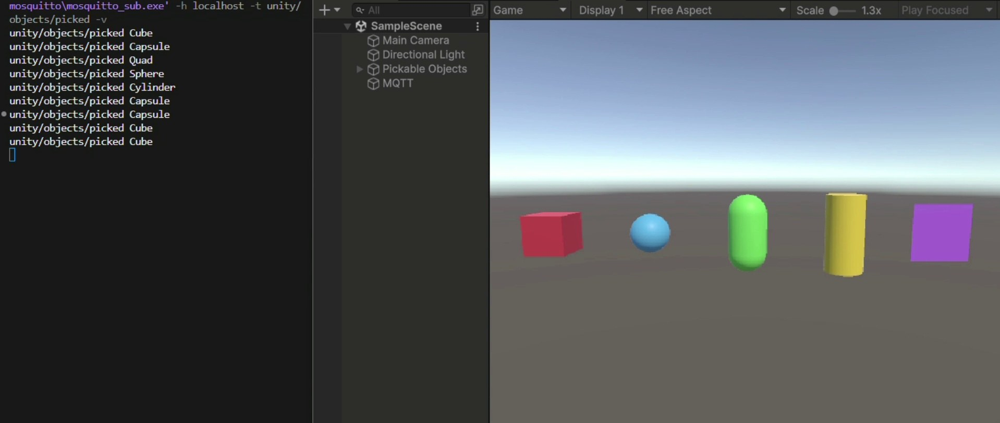

Objetivo
Vincular la selección de objetos dentro de Unity con la publicación de mensajes MQTT, utilizando un broker local para observar las acciones desde una terminal.
PRÁCTICA 05 · TECNOLOGÍAS EMERGENTES
En esta práctica desarrollamos una escena en Unity con cinco figuras que podían seleccionarse mediante clics. Al interactuar con ellas, se programó un cambio de color y el envío de un mensaje MQTT. La idea fue conectar lo que hacíamos dentro de Unity con una herramienta externa para comprobar la comunicación.
Vincular la selección de objetos dentro de Unity con la publicación de mensajes MQTT, utilizando un broker local para observar las acciones desde una terminal.
Primero instalamos Git para poder agregar paquetes desde repositorios. Después incorporamos NuGetForUnity y la biblioteca MQTTnet en nuestro proyecto. También instalamos y configuramos Mosquitto como broker local para recibir los mensajes.
En el proyecto PracticaTocarObjeto creamos cinco figuras: Cube, Sphere, Capsule, Cylinder y Quad. Las agrupamos en Pickable Objects, asignamos colores diferentes y acomodamos sus posiciones para distinguirlas desde la cámara.
Luego programamos el comportamiento de cada figura: al hacer clic, se actualiza su color y se publica un mensaje MQTT indicando el objeto seleccionado. Para tener organizada la conexión, agregamos un objeto llamado MQTT en la jerarquía de Unity.
Finalmente, abrimos una terminal con mosquitto_sub y nos suscribimos al tema unity/objects/picked desde localhost. Así comprobamos que la terminal mostraba los nombres de las figuras seleccionadas durante la ejecución del proyecto.
Para escuchar los mensajes desde la terminal utilizamos:
mosquitto_sub -h localhost -t unity/objects/picked -vVista del editor con las figuras de la escena y los objetos Pickable Objects y MQTT en la jerarquía.

Durante la prueba se observaron publicaciones con los nombres
Cube, Capsule, Quad, Sphere y Cylinder en el tema unity/objects/picked.

En el video se puede observar la escena de Unity y, al mismo tiempo, cómo se van registrando las selecciones en la terminal.
Logramos que Unity enviara mensajes MQTT cada vez que seleccionábamos una figura y pudimos verlos en la terminal mediante Mosquitto. Esta práctica me ayudó a entender mejor cómo conectar una interacción dentro de una escena virtual con un sistema de comunicación externo, y cómo comprobar que los mensajes realmente se están enviando.